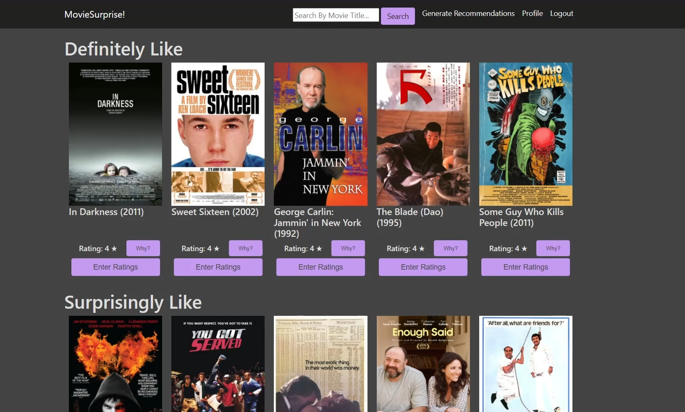

A Serendipitous Movie Recommender
MovieSurprise! was created by myself and six classmates at Bradley University for our computer science capstone project. One classmate and I worked on the back end. This includes Python scripts, SQL queries, and data management. The system uses collaborative filtering algorithms to recommend movies we think a user would like, as well as movies we think a user would be surprised that they like.
My Contribtuions:
- Back end programming
- Database design
Tools I Used:
- Python
- SQL
- Surprise SciKit
Features:
- User based collaborative filtering
- Login, registering, and admin privileges
- User data saving